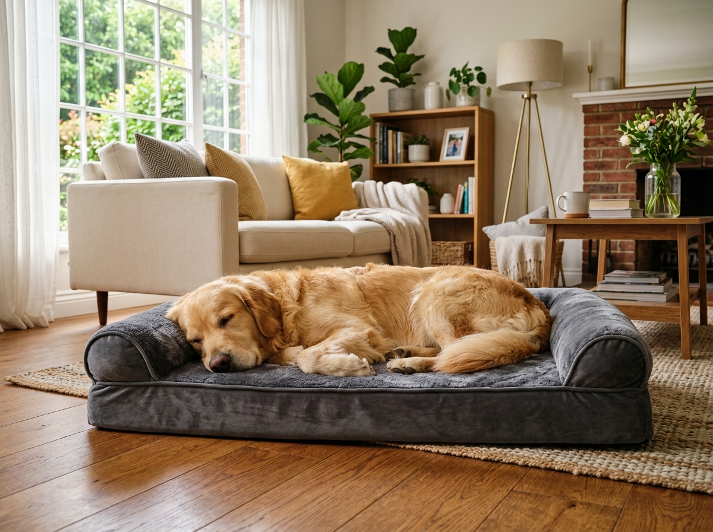

How to Pick the Right Dog Bed for Your Breed’s Size
Why measuring from nose to tail while fully stretched matters far more than just your dog's overall weight when selecting orthopedic foam density.

Choosing the correct pet bed is one of the most overlooked aspects of lifelong canine skeletal health. While many pet owners purchase beds based primarily on room aesthetics or manufacturer weight charts, our testing reveals that sleep posture geometry is what truly dictates spinal comfort.
1. Measure From Nose to Tail Base in Deep Sleep
Wait until your dog is fully relaxed in their habitual sleeping pose. Measure the full length from snout to tail base, and add 8 to 12 inches. Sprawlers require flat open mattresses, whereas curlers thrive in bolstered nest designs that provide chin rests and secure boundaries.
Veterinary Testing Benchmarks
- Minimum Core Density: 4.0 lb/cu.ft medical-grade memory foam prevents bottoming out against hard floors.
- Bolster Alignment: Firm 3-sided bolsters relieve cervical spinal tension in dogs over 40 lbs.
- Thermal Dissipation: Breathable micro-suede or cotton covers prevent overheating during rapid eye movement sleep.
2. Density Matters More Than Thickness
A 6-inch polyfill or shredded foam bed will compress to less than an inch beneath a 50-pound dog within three weeks. Look for dual-layer high-density memory foam with a solid base support layer to prevent joint stress and morning stiffness.
3. Waterproof Internal Liners Are Mandatory
Even well-trained dogs bring moisture from wet grass or sudden illness. A non-crinkly waterproof internal lining prevents bacteria from colonizing the core foam where it cannot be laundered.